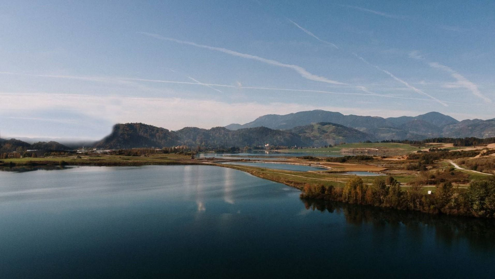
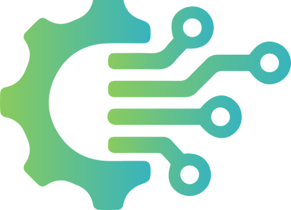
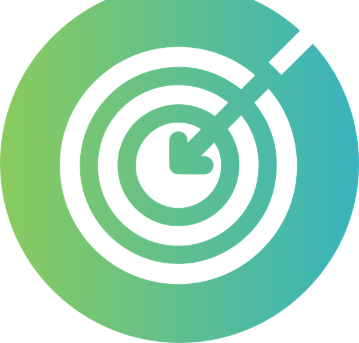
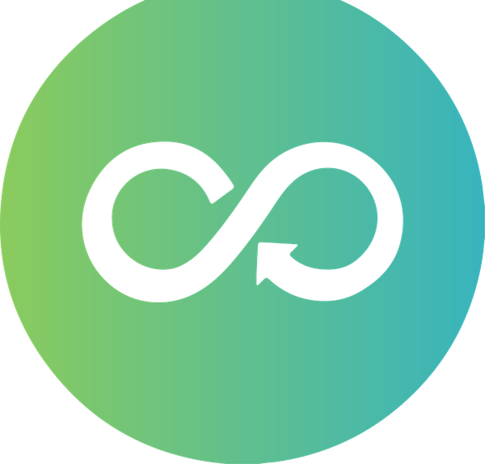
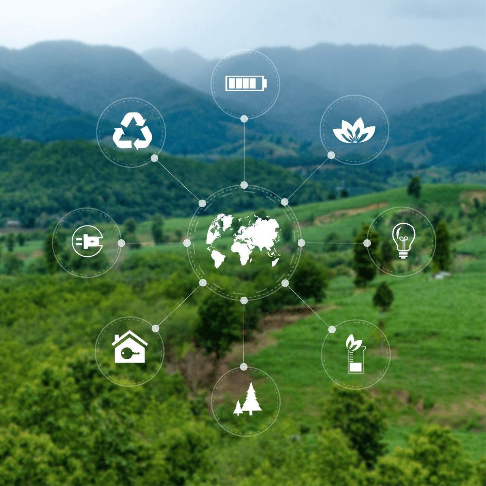
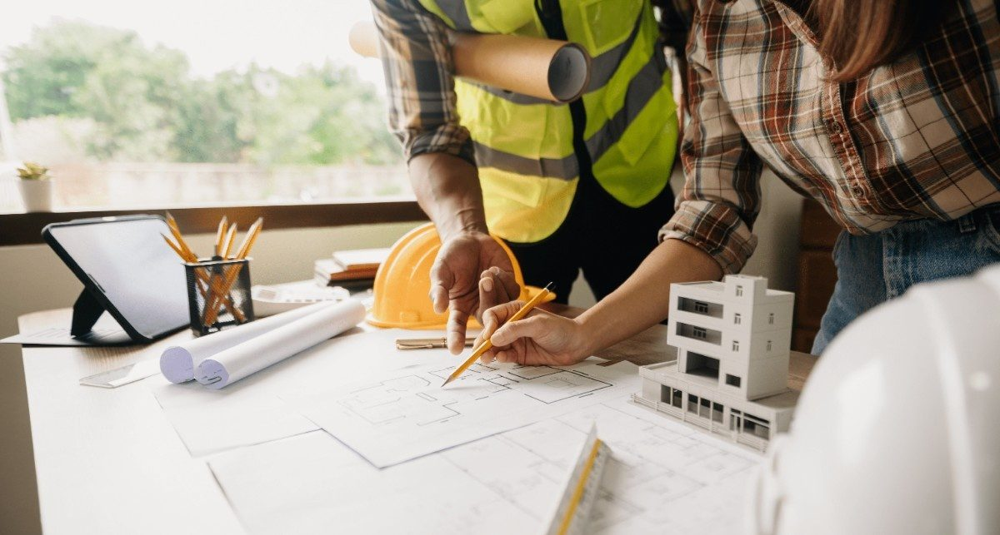
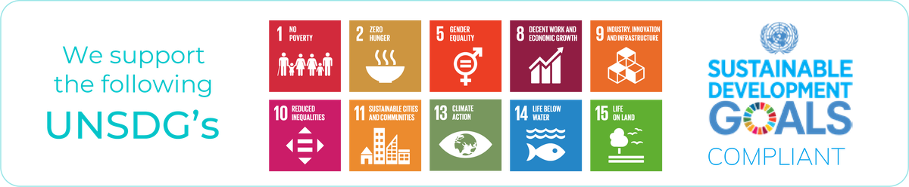
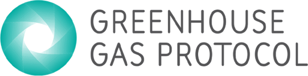

#DoingGood
We work with clients to meet decarbonisation targets, avoid landfill and build recycling and circularity into everyday operations.
Global sustainability & circularity social enterprise
YES Full Circle is a full-service environmental services company in Dubai. We collect, recover and return materials to production so nothing you discard ends up in landfill.
UAE's largest award-winning circularity enterprise

What the name means
We work with clients to meet decarbonisation targets, avoid landfill and build recycling and circularity into everyday operations.
From our profits, we fund programmes that support social, environmental and humanitarian causes.
What we do
Four material streams and six specialist services, each with a recovery route in place before we collect a single kilo.
Secure and responsible destruction of products, followed by segregation and routing of recoverable materials through the right recycling and recovery channels.
Discuss a projectSolutions for obsolete, damaged, expired, recalled or unsellable branded products, including debranding and secure destruction to prevent unauthorised reuse or resale.
Discuss a projectSecure shredding and destruction for materials and data-bearing devices, supporting confidentiality, compliance and responsible downstream processing.
Discuss a projectResponsible management of specialised and complex waste streams through appropriate handling, processing and approved recovery or disposal routes.
Discuss a projectCollection, segregation and recovery of ferrous and non-ferrous metals and other recyclable scrap materials for return to the resource cycle.
Discuss a projectDiscarded materials and products transformed into new, useful items, extending material life and showing what circularity can look like.
Discuss a projectWhat we offer
Beyond collection and recycling, we design the programmes, technology and reporting that make circularity work inside your organisation.

Full Circle Technology brings tracking, reporting and process design to your waste streams, so recovery is measured and decisions are backed by data.

Controlled, documented destruction of branded, recalled or confidential material, with certificates of destruction and recovery of what can be recovered.

Producer responsibility, white-labelled CSR programmes and take-back schemes such as Nespresso capsule recycling and YFC Re-Nu, designed around your products.

Who we are
Over 50 years of combined international experience, and a list of UAE firsts that keeps growing.
Our mission
We work through them in order with every client. The further up the list a material stays, the less of it we ever have to process.
Cut what enters the waste stream before it is generated.
Keep products and packaging in service for as long as they are fit.
Change products, packaging and processes so less needs recovering.
Recover raw materials and return them to production.
Restore items to working order instead of replacing them.
Give materials that cannot go back a new, useful life.
Who we work with
Programmes are built around each sector's materials, compliance needs and reporting, not a one-size-fits-all bin.

Impact
Our programmes map to the UN Sustainable Development Goals and report carbon under the Greenhouse Gas Protocol, so the savings we deliver stand up in your own ESG reporting.

Each programme is mapped to the specific goals it advances, from responsible consumption to climate action.

Carbon avoided through landfill diversion is calculated and reported under GHG Protocol methodology.
Contact us
Tell us what you handle and where it goes today. We'll map a recovery route and come back with a plain proposal.